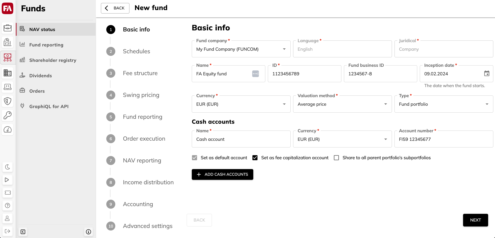

Create a fund
A fund in FA Fund management contains a range of settings for NAV and fee calculation, fund reporting, order execution, income distribution and accounting. To add a fund and define the fund settings:
Go to FA Fund management, NAV status view.
Click Add fund in the upper-right corner. The Fund wizard guides you through the fund properties that you need to define. For details, see Fund properties in the Fund wizard.

FA creates a fund portfolio with the specified properties in FA Back to store the fund information and manage fund subscriptions and redemptions. To open this portfolio in FA Back, click in the Fund details pane on the right.
After you created a fund, you can add share classes if needed and start the fund. See Add share classes and Create initial investments for instructions.
Fund properties in the Fund wizard
Basic info tab
The Basic info tab contains the basic information about the fund.
- Fund company*
The company the fund is administered by. See Create a fund company.
- Language*
The language to be used in portfolio reports. You can also see the language of the fund in the contact of the company in FA Back.
- Juridical*
Juridical form of the fund company. You can also see the juridical form in the contact of the company in FA Back.
- Name*
Fund name.
- ID*
A unique fund ID used to identify the fund and search for funds. You should only use numbers and letters (a-z).
- Fund business ID
The ID provided by the authorities for your fund. Fund business ID is used for tax reporting purposes. The ID is saved in FA Back. You can find it in the Portfolio window, IDs tab.
- Inception date*
The date when the fund starts.
- Currency*
Fund currency. Once you create a fund, the currency can't be changed.
- Valuation method*
Valuation method for the fund portfolio:
Average price
Average price with adjustments – Uses transaction types that control the market value of the positions with the transaction's trade amount, such as Private Equity transaction types.
Average price with separate items – Valuates portfolio with average price, but keeps track of original purchase dates.
FIFO
FIFO (combined) – Valuates the portfolio based directly on transactions in the subportfolios.
FIFO with adjustments – Uses transaction types that control the market value of the positions with the transaction's trade amount, such as Private Equity transaction types.
- Type*
Portfolio type. Choose the type that corresponds to the fund portfolio.
Cash accounts
Cash accounts for the fund.
- Name*
Account name.
- Currency*
Account currency.
- Account number*
The account number, for example, the bank account number.
- Set as default account
Set the account as the default account of the portfolio. All transactions are by default created against this account.
- Share to all parent portfolio's subportfolios
Make the account available in the parent portfolio and in the other portfolios under the parent portfolio. Choose this option, for example, if you are going to use FX-hedged share classes in your fund. For details, see Hedge currency exposure.
Schedules tab
The Schedules tab contains schedule settings for calculating NAV, fees, and unofficial NAV for the fund. Schedules let you track your fund's status. For example, you can see if NAV or fees have to be calculated today. You need to fill in the dates only once. After that, dates are updated every time you accept the calculation.
The Schedules tab features settings for different workflows. You can set a schedule to calculate:
NAV and fees as a part of regular NAV calculation workflow.
Fees, in addition to the regular NAV calculation schedule, between the regular NAV calculation dates (to set a schedule for this workflow, click Add separate fee calculation schedule).
Performance fee with equalization method (to set a schedule for performance fee equalization, click Add fee crystallization schedule). You can also use the same schedule for fee capitalization if you have chosen it in fee settings on the Fee structure tab.
Unofficial NAV for reporting purposes between the scheduled regular NAV calculations (to set a schedule for this workflow, click Add unofficial NAV calculation schedule).
To learn more about calculation workflows, see Workflows and NAV statuses.
- Frequency
Calculation frequency: daily, weekly, every two weeks, and so on.
If you want to make calculations without a preset schedule, choose "No schedule" and select Allow non-scheduled calculations below. This option is available for NAV, fees, and unofficial NAV calculations.
- Holiday calendar
The holiday calendar to take into account in the calculation schedule. If you don't find a suitable holiday calendar from the list, you can create a calendar in FA Back (for details, see Preference - Securities in the FA Back reference).
- Roll convention
Calculation schedule based on the day of the month or day of the week. One of the most common roll conventions is "EOM" (end-of-month).
You set the calculation frequency to "Every three months" and the first calculation date is on June 30th. The calculation dates will fall on the 30th of each month (September 30th, December 30th, March 30th, and so on). For months with 31 days, the calculation date won't be the last day of the month. If you choose the "End of Month (EOM)" roll convention, the system will recognize that June 30th is the last day of the month, and the calculation dates will fall on the last day of each month (September 30th, December 31st, March 31st, and so on).
- Business day convention
Business day convention determines how to adjust a date if it falls on a non-business day.
Convention
Description
Following
Move to the next valid business day.
Modified following (without crossing mid-month or month end)
Move to the next valid business day, unless that is after the 15th of the month OR in the next month in which case move to the previous valid business day.
Modified following (without crossing month end)
Move to the next valid business day, unless that is in the next month in which case move to the previous valid business day.
Modified preceding (without crossing month start)
Move to the previous valid business day, unless that is in the previous month in which case move to the next valid business day.
Nearest
For Sunday and Monday, move to the next valid business day, for all other days, move to the previous valid business day.
No adjustment
Make no adjustment.
Preceeding
Move to the previous valid business day.
- First date
The date for which the calculation is made for the first time.
- Previous date
The date for which the latest NAV or fees were calculated. For the newly created fund, previous NAV date must be the same as the first NAV date.
- Calculation delay in days
The number of days between the NAV or fees date and the calculation date. Enter "0" to calculate NAV or fees on the same date, or choose the number of days to calculate NAV or fees with a delay.
- Calculate next days
The button sets the next NAV or fees date and calculation dates according to the information entered above.
- Next NAV date
The next NAV or fees date based on the frequency, holiday calendar conventions and the first NAV or fees date chosen above.
- Previous calculation date
Previous calculation date based on the previous NAV or fees date and calculation delay.
- Next calculation date
Next calculation date based on the next NAV or fees date and calculation delay.
- Allow non-scheduled calculations
Allows starting a calculation outside the schedule, when the fund has "No action" status. For example, this can be useful in case you don't calculate scheduled NAV often but there are big movements in fund’s capital that affect the valuation of the fund. The Allow non-scheduled calculations option is available for NAV, fees, and unofficial NAV calculations.
Non-scheduled NAV calculation result is shown in the NAV window. The calculation date is shown in the Latest NAV column in the NAV status view.
Fee structure tab
The Fee structure tab lets you set or edit the fees applied to the whole fund. Fund-level fees are calculated first, in the order you place them in the Fund wizard, followed by the share class fees.
Note
To add fees per share class, see Add share classes.
Fund fees
The Fund fees section lists the fund fees. To add a fee formula, click the Add fee button at the top-right.
- Fee formula
Fee formula used to calculate the fee and generate fee transaction. For the list of fee formulas, see Formulas for accrued fund fees and receivables.
- Fee transaction type
Transaction type linked to the chosen fee formula.
- Amount or %
Fee percentage or amount in the fund currency, depending on the fee formula.
- Decimals
The number of decimals used for calculating fees (0 to 10). The "Default" value is 2 decimals.
- Ex-post cost category
Ex-post cost category for the fee. The categorization is used in cost analysis and reporting, as well as for creating kickbacks (see Create rebates and Rebate contracts (kickbacks) in FA User guide).
- Additional options
Additional fee setups.
- Calculate fee per security
Run the formula multiple times, for each security in the fund investment portfolio. Used, for example, for kickbacks.
- Formula sets the transaction account
Create an account for the fee formula. For example, it can be useful with accrued account interest transactions over multiple accounts.
- Include in income distribution
Include the fee in the income distribution calculation.
- Use crystallization schedule for capitalization
Capitalize fees automatically on the crystallization date when you accept NAV. The crystallization dates are defined in the Fund wizard, Schedules tab. Fees are capitalized to the account that has the “Fee capitalization” tag. If no account is marked with this tag, fees are capitalized to the default cash account.
Alternative fee calculation modes
The Alternative fee calculation modes section contains advanced settings that affect fee handling in the NAV calculation. Leave the selections unticked for regular fee handling.
- Include fees calculated since the previous NAV calculation date in the current NAV calculation (if fees are calculated separately from NAV)
Take the fees calculated since previous NAV calculation into account when calculating the current NAV.
- Allocate fees per share class from the beginning of the fund (for example, for private equity funds)
Calculate fees per share class since the beginning of the fund (not since the latest NAV calculation). To learn more, see Calculate and accept NAV.
Performance fee equalization
The Performance fee equalization section contains the fee formula to use if you calculate performance fee and equalize it regularly according to the crystallization schedule. In addition to choosing the fee formula here, you need to define the crystallization schedule in the Fund wizard, Schedules tab, and the fee parameters in the Share class wizard, Fee structure tab.
Select Calculate performance equalization fee with contingent redemption method and fill in the fields to define the fee settings:
- Fee formula
Fee formula used to calculate performance fee transactions: choose "Performance fee with crystallization".
- Fee transaction type
Transaction type linked to the chosen performance fee formula.
Swing pricing tab
Swing pricing is designed to protect existing investors in a fund from the costs incurred when other investors buy or sell units in that fund. NAV per unit is adjusted with the swing factor (in percentage) when net cash flow exceeds the defined thresholds:
If positive net cash flow exceeds the threshold, NAV is swung upwards:
Equation 9.If negative net cash flow exceeds the threshold, NAV is swung downwards:
Equation 10.
Swing calculation sums up cash flows originating from all share classes on NAV date.
Swing adjustment is calculated automatically when you calculate NAV. Depending on your settings, it can be included in NAV or calculated separately and not included in the NAV you publish.
- Official NAV
A setting to choose how swing adjustment is used in your fund:
Swung NAV - Swing adjustment is included in official NAV.
Unswung NAV – Swing adjustment is not included in official NAV.
The logic of handling swing adjustment is shown in the table.
Official NAV = Swung NAV
Official NAV = Unswung NAV
Reports and positions
Swung NAV
Unswung NAV
Trade orders and transactions
Swung NAV
Swung NAV
Swing factor
Swing factor is used for adjusting the unit price.
- For swinging up
The percentage to adjust the unit price if the net inflow of the fund exceeds the threshold.
- For swinging down
The percentage to adjust the unit price if the net outflow of the fund exceeds the threshold.
Thresholds
Swing thresholds are the net inflow or net outflow of the fund that triggers the adjustment to the NAV. You can set a threshold in fund currency or as a percentage of the fund's total net asset value on the NAV date.
- For swinging up
Net inflow that triggers swinging up.
- For swinging down
Net outflow that triggers swinging down.
Fund reporting tab
The Fund reporting tab lets you define the settings to produce fund reporting data, including fund KPIs, and store it in the FA Fund Management app (see Fund reporting data for details). Click Enable fund reporting and fill in the fields.
- Reporting schedule
The settings for the fund reporting schedule are similar to NAV and fee calculation schedules (see Schedules tab).
- Allocation groups
Allocation groups to analyze the fund portfolio contents. To learn more about allocations, see Allocation in the FA Back reference.
Order execution tab
The Order execution tab lets you define and edit the automatic trade order execution settings.
- Cut-off time
The cut-off time for the fund in 24 h format, for example, “13:00”. After you set the cut-off time, use decision tables make sure that certain transactions or trade orders that come after the cut-off time don't affect the NAV calculation. To learn more, see Set the cut-off time in FA User guide.
- Enable automatic order execution
Enable automatic order execution and create transactions for the fund when NAV is accepted.
- Default transaction types
Transaction types for the cash transactions (unit holder deposits and withdrawals).
- Account for cash transactions
Account number for the cash transactions. Leave the field empty to use the default account.
- Transaction types for bookkeeping
For bookkeeping purposes, you can provide transaction types that are used when creating cash transaction for client orders whose settlement date doesn’t follow the default logic.
Leave these transaction types empty to use the accounts for cash transactions instead.
Client orders
- Settlement cycle
Setting to define the settlement date for subscriptions and redemptions if it is missing in the client order. Enter the number of days after the transaction date.
- Account for client transactions
Account used for client transactions created from trade orders.
Use the account of the trade order to transactions
Use the currency account (or default account) to transactions
Use the default account to transactions
Cash transactions created for the fund
- Default transaction types
Transaction types for the cash transactions (unit holder deposits and withdrawals). We recommend using the "Deposit - Fund (FMDEP)" and "Withdrawal - Fund (FMWD)" types.
- Account for cash transactions
Account number for the cash transactions. Leave the field empty to use the default account.
- Transaction types for bookkeeping
For bookkeeping purposes, you can provide transaction types that are used when creating cash transaction for client orders whose settlement date doesn’t follow the default logic.
Leave these transaction types empty to use the accounts for cash transactions instead.
Breakdown of cash transactions
Breakdown of trade amount in cash transactions.
- Par value (the first NAV value)
Par value to use in the deposit and withdrawal transactions.
- Par value cost type, Income distribution tax type, Over/ under value cost type, Swing tax type
Cost and tax types to record in the deposit and withdrawal transactions.
Income distribution tab
The Income distribution tab features settings for keeping track of the fund's accrued income and calculating the tax on it if needed. FA Fund Management app calculates the accrued income based on the bookkeeping postings and records the result into your fund every time you calculate NAV. You can choose to calculate tax on the accrued income at the same time.
After NAV is calculated, the system creates transactions for accrued income and calculated tax. The calculation also allocates accrued income per share class in security market data (Security window, Market data tab in FA Back) while pricing the share classes with NAV.
Click Enable income distribution and fill in the fields.
Accrued income
Settings to calculate accrued income.
- Accrued income formula
Fee formula to calculate accrued income. Accrued income is calculated every time you calculate NAV. By default, the formula is "Fee formula for income distribution".
Fee formula can be specified either for the whole fund or for a share class (not for both). Make sure that you don’t have any fee formulas in the Share class wizard, Fee structure tab if you use fund-level rules and the other way round.
- Fee transaction type
Type of the transaction generated by the accrued income formula. For example, the default fee formula for income distribution used the Icome distribution (ID) transaction type.
- Bookkeeping accounts used to calculate income distribution
Fields for bookkeeping accounts to track accrued income. When you calculate NAV, FA sums up the balances on the specified bookkeeping accounts on the NAV date. To enter multiple account numbers, separate them with a semicolon. To include only part of the account balance in the calculation, enter a percentage after the account number. For example, "123456=45,5" means that 45,5% of the 123456 account balance is used in the calculation.
- Mark all “Ready” bookkeeping postings from start of the year to the NAV date as “Reported” when NAV is accepted
Change the status of bookkeeping postings produced by income distribution when the NAV is accepted. In most cases, you need to have this option selected.
Accrued tax
Settings to calculate tax on accrued income.
- Calculate tax of the accrued income distribution
Option to record tax to be paid on the accrued income. Fill in the tax parameters below.
- Tax percentage
Percentage of accrued income to be paid as tax.
- Tax formula
Fee formula used to calculate tax on accrued income. By default, the formula is "Tax formula for income distribution".
- Transaction type
Type of the transaction generated by the tax formula. For example, the default "Tax formula for income distribution" formula uses the "Accrued tax debt for income (ITX)" transaction type.
Accounting tab
The Accounting tab lets you define accounts and rules for generating postings for income distribution (for other income distribution settings, see Income distribution tab .
- Automated deferral runs before NAV calculation
Settings for deferral runs before NAV calculation. You need to run deferrals to generate postings for the income distribution calculation.
Choose the deferral type to run and the previous deferral date. If the previous deferral date is empty, the starting date of the fund is used.
- Accounting rules for income distribution-related postings
Accounting rules that are used to generate postings related to income distribution. These rules are specified in the system configuration made by FA consultants. Enter them in the Accounting rules for income distribution-related postings field to change posting status to “Reported” when you accept NAV.
Advanced settings tab
The Advanced settings tab contains miscellaneous settings for your fund.
Unit certificates
Setting for unit certificates. To learn more about unit certificates in the FA Fund management app, see the Unit certificate
- Report template (PDF)
The path to the custom Unit certificate template. For example, "/UnitCertificateCustom/Unit certificate".
- Transaction types
Transaction types for the unit certificate to show in the Shareholder registry view. If empty, only the UC type is shown.
Allocation
Define the setting for updating the share class security allocations.
- Update fund security allocations automatically when accepting NAV
The option to update allocations for the share class securities when you accept NAV. You can view allocations in the Security window, Allocations tab in FA Back.
- Update allocations for securities that get price from share classes
The option to update allocations for securities that get prices from share classes. For example, such structure with multiple securities can be used, if your fund shares are sold via a nominee. In this case, the share class ownership is handled with two securities:
Share class security that is automatically created in FA Back when you add a share class. This security has the nominee as a shareholder.
Security that has the same prices as the share class security and is owned by end clients. This security is used to get share class positions in clients' portfolios. To link this security to the share class security, open it in FA Back and choose the share class security in the Price from security field.
Choose Update allocations for all securities that get price from share classes to have allocations updated for all securities.
- Allocation groups
Allocation groups to update share class allocations based on fund portfolio contents when you accept NAV. Allocations are updated for the configured group(s), based on the fund portfolio’s allocations on the NAV date.